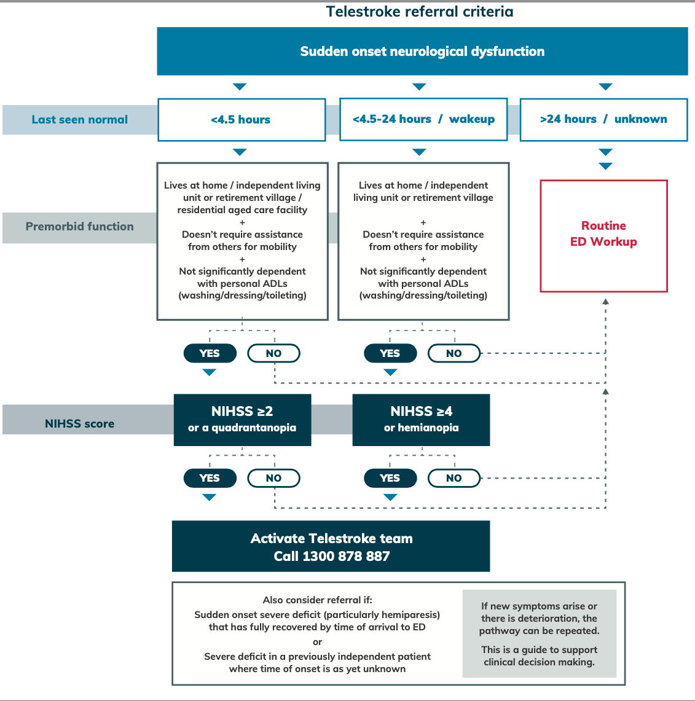
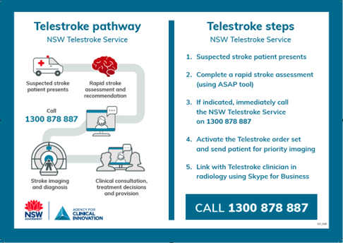

ICU and You · Your Presentations · Number 4
Two things decide the treatment: what is on the scan, and what time it is. Everything after that is arrangement
Dr Sarah Haydon
Your Presentations publishes teaching that would otherwise be given once and filed. If you have given a departmental talk and you are willing to have it read more widely, it can go up here under your own name, properly credited, and you can put it on your CV as a publication rather than as a line in a teaching log.
It began with Coffs Harbour and it is not limited to Coffs Harbour, or to registrars. Medical students, nurses, doctors at any stage and any health professional at all — if you have made something good, the invitation is open to you. The button at the foot of this page reaches me.
Most emergencies give you room to think. A stroke gives you a clock, a scan, and a phone number, and the order in which you use them is most of the job.
What follows is a regional hospital’s working account of the first few hours: how the referral is decided, what the imaging is actually telling you, what each of the two treatments can and cannot reach, what happens when it bleeds, and the part that catches people out — that the word stroke covers four different blood pressure targets, two of which point in opposite directions.
The first question is not what the deficit is. It is when the patient was last seen normal, and it is worth being pedantic about the wording, because last seen normal and when the symptoms were noticed are not the same instant and the difference between them decides what you are allowed to give.
If nobody saw it start — the patient woke with it, or lives alone, or was found — you are not stuck, but you are on a different road. The 2026 AHA/ASA guideline tells you to take the estimated midpoint of sleep as the onset time. Someone who went to bed at eleven and woke at seven is counted from three in the morning, which is four hours ago rather than eight.
Be careful what you do with that number. The midpoint belongs to the imaging-selected route, not to the ordinary four-and-a-half-hour one: an unwitnessed onset is treated on what the perfusion or diffusion study shows, out to nine hours from that midpoint. The arithmetic does not convert an unknown onset into a known one. What it does is stop the clock being a reason not to scan.
“When was he last his normal self?” gets you a story. “What time did you last speak to him?” gets you a number. Ask the second one, write down the hour and minute, and write down who told you, because the neurologist on the phone will ask and the answer will not improve with retelling.
The NIHSS is eleven items, scored 0 to 42, and the reason it matters here is not that it measures severity well — it is that the referral thresholds are written in its units.
| Item | What is tested |
|---|---|
| 1 | Level of consciousness, in three parts: responsiveness, two questions (the month and the patient’s age), and two commands |
| 2 | Best gaze — horizontal eye movements |
| 3 | Visual fields |
| 4 | Facial palsy |
| 5 | Motor arm, scored for each side |
| 6 | Motor leg, scored for each side |
| 7 | Limb ataxia |
| 8 | Sensation |
| 9 | Best language — aphasia |
| 10 | Dysarthria |
| 11 | Extinction and inattention |
Read the list again and notice what is not on it. There is no item for vertigo, none for diplopia, none for dysphagia, and none for truncal ataxia unless it is bad enough to show in a limb — dysarthria is the one posterior symptom that does score. Those are the symptoms of a posterior circulation stroke, which is somewhere between a fifth and a quarter of all strokes, and the consequence is exactly what you would predict: the NIHSS underestimates a posterior circulation stroke, and a patient whose brainstem is infarcting can score low enough to be judged ineligible for a treatment that would have worked.
This is not a reason to distrust the score. It is a reason to say out loud, when you ring, that the score is low and the picture is posterior. Dizziness, vertigo, double vision, slurred speech, trouble swallowing, loss of balance — any of those, in the right time frame, is a conversation worth having whatever the number says.
At Coffs the route is the NSW Telestroke service. The rapid assessment lives on the intranet under the Clinical Resource Centre, as Stroke rapid assessment, and the tool walks you through the same sequence every time: onset of symptoms, premorbid function, orientation, then visual, motor and sensory assessment. It produces a recommendation at the end — acute stroke workup and a call to the neurologist, or not acute and on to the local stroke protocol.
It will not let you finish without the one field people skip. If last seen well is blank the report comes out marked incomplete, which is the tool doing its job.
NSW Telestroke 1300 878 887
Non-contrast CT first, and then CT angiogram and CT perfusion. The non-contrast scan answers the only question that cannot wait: is there blood. Roughly four strokes in five are ischaemic and the rest are haemorrhagic, and from that fork the two pathways share almost nothing — ischaemic goes to the neurologist and the Telestroke service, haemorrhagic goes to neurosurgery at John Hunter.
The angiogram tells you whether there is a clot you could reach. The perfusion study tells you whether there is anything left worth reaching it for.
Four numbers come off a perfusion study and it is worth being able to say what each one is before you look at the colours.
The infarct core is tissue that is dead or will be, whatever anyone does. The ischaemic penumbra is the rim around it: underperfused, still alive, and recoverable if flow comes back. Both show a prolonged transit time, so timing alone does not separate them. What separates them is the volume.
The penumbra holds its blood volume up — sometimes above normal — because the arterioles downstream have dilated as far as they can to keep the flow going. When that fails, the volume collapses, and the tissue joins the core. So the mismatch between the two is not just a radiological curiosity. It is a measure of how much of this stroke has not happened yet.
One caveat, because the software has moved past the physiology. The volume difference is real and it is why the penumbra is still alive — but the automated maps you will actually be handed do not threshold on it. They call core a relative cerebral blood flow under thirty per cent and tissue at risk Tmax over six seconds, which is what the trials used. Know the physiology; read the numbers the report gives you.
As early as possible. Standard window four and a half hours, and the 2026 guideline supports extending that to nine hours in selected patients — selected meaning that the perfusion study shows salvageable tissue, not that the clinician feels optimistic.
Before the drug goes up:
| In | Out | Relative |
|---|---|---|
|
|
|
The three columns are as the presentation gave them. Worth knowing that the third is not a settled category: recent stroke, recent head trauma and recent intracranial or spinal surgery are absolute contraindications in the AHA/ASA criteria rather than relative ones, and amyloid changes on imaging are usually a risk to weigh rather than an automatic exclusion. Your own protocol is the one that governs.
Alteplase — 0.9 mg/kg to a maximum of 90 mg. Ten per cent as a bolus, the rest over sixty minutes.
Tenecteplase — 0.25 mg/kg to a maximum of 25 mg, as a single intravenous dose.
The 2026 guideline endorses either inside four and a half hours and prefers neither — where the previous one primarily endorsed alteplase. The practical difference is in how they are given: tenecteplase is a push, and a push does not need a pump, a line reserved for an hour, or a nurse watching an infusion through a transfer.
Afterwards, for twenty-four hours: no anticoagulation, no antiplatelets, no further thrombolytic. And no unnecessary procedures — no invasive lines, no nasogastric tube — because every one of them is a hole in a patient whose clotting you have deliberately disabled.
Thrombolysis dissolves what it can reach chemically. Retrieval goes and gets it, and it is the better treatment for a large vessel — but only for a large vessel. The accessible territory is the internal carotid, the middle cerebral in its M1 and early M2 segments, and the basilar. Nothing distal to that is a target, which is why the angiogram and not the deficit decides.
The 2026 guideline adds the posterior circulation explicitly: in basilar artery occlusion presenting within twenty-four hours with an NIHSS of ten or more, retrieval improves functional outcome. Given what the NIHSS does to posterior strokes, that threshold of ten is a reminder that the patients who qualify are the sick ones — and that a basilar occlusion scoring eight is a conversation, not a closed door.
From Coffs, the referral services are Prince of Wales, Liverpool, Royal Prince Alfred, John Hunter, Royal North Shore and Westmead. The on-call neurologist recommends; you ring the retrieval service to organise it.
Haemorrhagic transformation is the complication that makes everyone hesitate over the consent conversation, so it is worth having the shape of it straight. Most of it is petechial and inconsequential. A minority is a haematoma, and only the largest grade carries a clear excess of death and dependency.
The number that carries the consent conversation is the symptomatic one: around six per cent after intravenous thrombolysis, against 0.6 to 3 per cent in patients who were not thrombolysed. The risk factors are the ones you would guess: a severe stroke, a proximal middle cerebral occlusion, and treatment given late.
The presentation also gave about five per cent haemorrhagic transformation overall, with nine in ten of those petechial. Those two cannot stand beside the six per cent above: five per cent in total, ninety per cent of it petechial, would put the symptomatic rate near half a per cent. They are measuring a different population from a source that has not been found, so they are described here rather than stated. If the source turns up they go back on the page.
Haemorrhagic transformation presents as a patient going backwards. Worsening deficit, headache, falling GCS, vomiting — and, if the pressure inside the head is climbing, Cushing’s triad of hypertension, bradycardia and an irregular respiratory pattern. In a thrombolysed patient, any of these is a CT until proven otherwise.
Primary intracerebral haemorrhage is hypertensive in about half, with cerebral amyloid angiopathy behind much of the lobar bleeding in the elderly and the remainder spread across vascular malformations, tumours, coagulopathy and causes never established. Neurology will often ask you to call John Hunter neurosurgery directly.
A short-acting dihydropyridine calcium channel antagonist, selective for arterioles. It comes neat at 50 mg in 100 mL and starts at 1 to 2 mg/h, doubling at about ninety-second intervals while you are still a long way off and in smaller steps as you close on the target. Most patients settle at 4 to 6 mg/h. Pressure begins to fall within two to four minutes and recovers within five to fifteen when you stop. It acts on arterial resistance and largely spares the venous capacitance vessels, so preload is little affected.
The rate ceiling is quoted as 32 mg/h, but that is the top of a thin evidence base — most patients in the trials never went above 16. The real limit is the fat: no more than 1000 mL, an average of 21 mg/h, in twenty-four hours. Which is also its contraindication list, since it is a twenty per cent lipid emulsion in soybean oil and egg phospholipid: disordered lipid metabolism, and allergy to soy or egg. Severe aortic stenosis is a contraindication too, not merely a caution. And it is not stocked in every unit — check yours before you plan around it.
This is the part worth slowing down for, because the numbers on this page point in opposite directions and the word stroke is doing all the work of hiding it.
| Situation | Target | Why |
|---|---|---|
| Ischaemic, before thrombolysis | Under 185 / 110 | A gate to get through, not a target to chase. Above it, you cannot give the drug. |
| Ischaemic, first 24 hours after | Under 180 / 105, and not below 140 | The penumbra is being perfused through a narrowed or newly opened vessel, and its autoregulation is gone. Driving the pressure down takes away the only thing keeping that tissue alive. |
| Blood on the scan | Systolic under 140 | Primary haemorrhage, or haemorrhagic transformation. Now the pressure is driving the bleeding rather than feeding the brain. |
| Afterwards, for prevention | Systolic 120 to 130 | A different question entirely, asked over months rather than hours. |
The 2026 guideline is explicit about the second row, and it is the change most likely to catch someone out: intensive lowering below 140 is not recommended even where reperfusion has been complete. The instinct after a successful retrieval is to protect the newly opened vessel by bringing the pressure down. The evidence says that instinct does not improve outcome after thrombolysis, and that after thrombectomy it may do harm.
Once the drug is in or the clot is out: ask whether there is blood on the scan. If there is, bring the pressure down. If there is not, the pressure is feeding tissue you are trying to save — keep it under the ceiling and leave it alone.
Before the drug, the rule runs the other way, which is the trap. 185 over 110 is a gate you have to get under before you can treat at all. And months later, when none of it is acute any more, the target is lower than every number in the table.
The rest of the admission is unglamorous and it is where most of the outcome is actually decided.
Investigations — stroke bloods, meaning HbA1c, glucose, lipids, coagulation studies and liver function. Telemetry or an ECG looking for atrial fibrillation. Carotid ultrasound. A transthoracic echo with a bubble study if the patient is under 55, looking for a patent foramen ovale. And a swallow assessment, before anything goes in by mouth.
Admission to the stroke unit locally, with blood pressure, blood sugar and regular neurological observations.
Antiplatelets, which depend on what you did earlier:
And the rest: a direct oral anticoagulant rather than an antiplatelet if there is atrial fibrillation; a statin; blood pressure management aiming at a systolic of 120 to 130; carotid endarterectomy where it is indicated; smoking cessation and diet.
Then the conversation nobody schedules and everybody has to have. No private driving for four weeks, three months minimum for a commercial licence, and in both cases medical clearance before the keys come back. For a TIA rather than a stroke it is two weeks, and four for a commercial licence. Say it on the ward, say it to the family, and write it down — because it is the instruction most likely to be heard as a suggestion.

Two questions carry this page. Is there blood on the scan? decides which pathway you are on, which specialty you are ringing, and which way you move the blood pressure. What time was the patient last normal? decides what is still available to you on that pathway. Everything else — the scores, the drugs, the thresholds — is downstream of those two.
Have you given a talk that deserved a bigger room?
If you work at Coffs Harbour — registrar, resident, student, nurse or anything else — send it to me and I will set it for the web as this one has been set: your name on it, your content, your structure. You keep the authorship entirely. It becomes something you can point at rather than something in a folder.
And if you are not at Coffs, the invitation still stands. Medical students, doctors at any stage, nurses, paramedics, pharmacists, physiotherapists — any health professional at all. Send me a message and your presentation and I will read it properly and come back to you. I cannot promise everything will go up, but I can promise it will be looked at by someone who wants it to work.
One practical thing worth knowing before you send: teaching slides are usually built from screenshots of guidelines, textbooks and journals, which is fine in a tutorial room and not fine on a public website. So the figures get rebuilt from the underlying facts rather than reproduced. That is part of what I do with it, and it costs you nothing but a conversation.
How you are credited is entirely your call — by name, by initials, or not at all — whether you write the piece or I do, and whether I quote you or simply say who sent something in; nothing of yours goes up with your name on it unless you have said yes.
The button opens a reply straight to me. If your device blocks it, write to icuandyou@icloud.com instead.